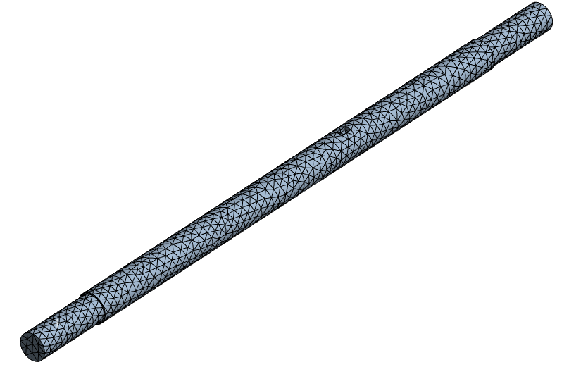
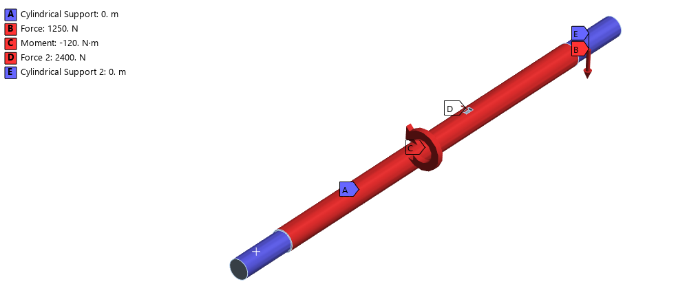

Cargo Tricycle Rear Axle
Design and analysis of a 900 mm rear axle for a cargo tricycle, including static strength, fatigue, deflection, bearing selection, and a torque-limiting key.

From loading requirements to validation
Our team selected cold-rolled AISI 1018 steel, built a free-body diagram, calculated bending and torsional stresses, and checked fatigue and static safety factors. We modeled the shaft in Siemens NX and compared analytical deflection to ANSYS results.
The report documents a fatigue factor of safety of approximately 2.5 and static safety factor just under 2. It also outlines SKF bearing selection and a 9 × 4 × 16 mm key intended to fail at the specified overload torque.
Collaborative academic project. Report describes a proposed design and machining plan; it does not establish that the axle was physically manufactured.

